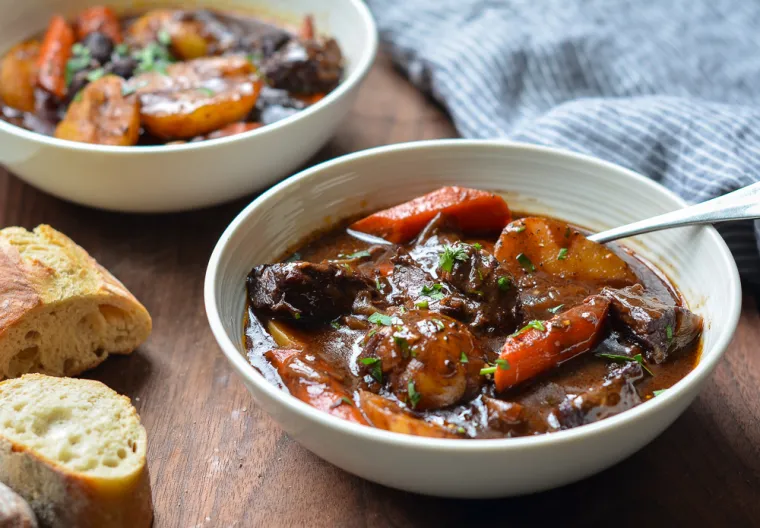

Beef stew

Description
This classic French beef stew is the ultimate cold weather comfort food. After a few hours in the oven, the meat becomes meltingly tender and enveloped in a rich wine sauce.
Ingredients
- 3 pounds boneless beef chuck (well-marbled), cut into 1½-inch pieces
- 2 teaspoons salt
- 1 teaspoon freshly ground black pepper
- 3 tablespoons olive oil
- 2 medium yellow onions, cut into 1-inch chunks
- 7 cloves garlic, peeled and smashed
- 2 tablespoons balsamic vinegar
- 1½ tablespoons tomato paste
- ¼ cup all-purpose flour
- 2 cups dry red wine
- 2 cups beef broth
- 2 cups water
- 1 bay leaf
- ½ teaspoon dried thyme
- 1½ teaspoons sugar
- 4 large carrots, peeled and cut into 1-inch chunks on a diagonal
- 1 pound small white boiling potatoes (baby yukons), cut in half
- Fresh chopped parsley, for serving (optional)